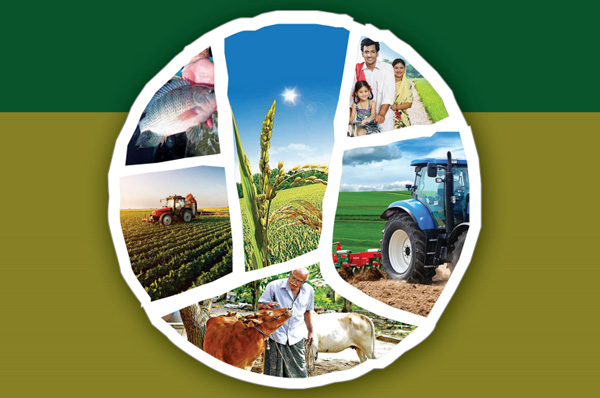
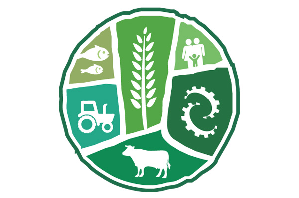

Our Growth Story

The beginnings of the State Agri-Horticultural Development Cooperative Society Ltd., can be traced back to the year 2005, when a group of agri-horticultural experts came together to bring awareness, training, education, products and services to uplift the lives of the rural communities in the South Kerala. Over the years, their efforts grew to become a Society, registered under the Cooperative Societies Act, and comprising a membership of over 2000 marginal, small and medium scale farmers and related stakeholders in the region. It is the only cooperative society of its kind to receive the accreditation of the Dept of Finance, Government of Kerala today.
Why State Agri Horti Society?
Indias planned approach to self-sufficiency in agriculture and improved rural economy gained pace with the green revolution of the 70s. During the decades that followed, several developmental initiatives made in the agro-industrial and economic infrastructure built the co-operative agri-horticulture sector to become one of the countrys largest spread of national resources, even by global dimensions. It is against this dynamic growth background that the Society earned its trust and goodwill to become a 2000-member farmers organization that continues to improve the lives of South Keralas rural population.
Our Mission
Finance, educate, train, and apply better technologies, systems and models for sustainable agri-horticultural and allied initiatives that improve livelihood standards of target group.
Our Vision
Sustainable and all inclusive transformation of rural and urban masses through agri-horticultural development.
Our Logo

Green, is associated with growth, harmony, freshness, safety, fertility, and environment. Green also means banking and finance in traditional thoughts. Fish, cow and humans represent livelihood through agricultural-related rural development Generally, green brings freshness, renewal and hope. The Circle represents the circle of life of man. He sows, cares, reaps and prospers for a season and with the next sowing season, the cycle is repeated. Machinery means know-how, training, investment. The upward growing sheaf of paddy, a picture of progress. The logo is simple, communicative and down-to-earth relevant.
Board of Directors
Prof (Dr.) P. Rajendran (Chairman)
Dr. P. Kamalasanan Pillai (Vice Chairman)
Mr. S. Binu Pilot (Managing Director)
Dr. Shaji George (Director)
Mr. V. Kanakarajan (Director)
Mr. V. Harikumar (Director)
Mr. K. Sukumaran (Director)
Mr. A. Sudhakaran (Director)
Ms. S. Jayalekha (Director)
Ms. T. Mallika (Director)
“I am happy to see that our Society is moving into a new phase of growth and capacity expansion. Nearly two decades have gone by, and despite our track-record of implementing a number of agri-horticultural and rural development projects, the challenge before us is to reach for higher goals and larger engagements. I am confident the enterprising spirit and commitment that drive our team will bring home such achievements in the near future.”
“The measure of success of any enterprise does not end with its growth in the balance sheet or market share. The real impact is when an institution becomes a catalyst for bringing positive changes in the lives of the people. Living in peace and harmony with one another and the environment and eco-system is the essence of human development. Our Society’s future thrust shall be to sharpen our capabilities, expand the rural development response and to focus on the aptitude and attitude of a new generation for greater responsibility and accountability.”
150 Years of Celeberating The Mahathma

Mahatma Gandhi was a great patron of the cooperative movement. He believed that cooperative farming could reduce labor, capital, agricultural inputs and provide employment to all adult villagers whilst increasing production. “In regard to agriculture, we must do our utmost to prevent further fragmentation of land; and (must) encourage people to take to cooperative farming … we shall have to produce more of what we can, in order thereby, to obtain in exchange what we are unable to produce.”, he said.
On this 150th Birth Anniversary of the Mahatma, we re-affirm our commitment to strengthen cooperative farming and build on the concept of good agricultural practices (GAP).
What we do?
- Financial Support
- Entrepreneurship Development
- Training
- Research
- Field Applications
- Hygiene Audit
- Landscape / Land Development
- Draft Project Report (DPR)
- Farm Development Agro Farm / Fish Farm / Cattle/ Poultry/ Piggery/ Beekeeping
- Liaison / PR
- Eco-Tourism
- Warehouse Management
- Agricultural Operations
- Agri-Clinic
- Agri-Infrastructure Development
- Landscape-Garden Development / Management Solutions
- Agri-Mechanization Management
- Agri-Facility Management
- Labour Bank (Skilled / Unskilled)
- Plant Material Supply Seed / Sapling / Plant
- Food Processing
- Valu Addition (Across Services)
- Fruits / Vegetables Supply / Sourcing
- Spices Valuation
- Agri-Horti Allied Consultancy
- Corporate Socvial Responsibility (CSR) Activities
Our Beneficiaries
- Agricultural and horticulture farmers
- Poultry, beekeeping, cattle farm, piggery, fish farm owners
- Animal husbandry specialists and veterinary clinics / professionals
- Fish farms, aquaculture project promoters
- Micro-irrigation experts / water management specialists
- Eco-restoration techno-management specialists
- Alternate energy developing institutions / entrepreneurs
- Government agencies in agro-industrial sector
- NGOs
- Self Help Groups (SHGs)
- Joint Liability Groups (JLG)
- Start-Ups
- Enterprise Incubation Controls
- Resident Associations (RAs)
- Small Farmers Banking Consortium (SMBC)
- NABARD Recognized Farmer Clusters
- Rural Banks / Banking / Financial Institutions
- Student community related to Agricultural and Animal Science Universities
- International Development Agencies
- Panchayats, Municipalities and Local Self Governments
- Public Health, Geo-Physical Study Centers, Analytical Labs
- Small and Micro Enterprises and Rural Industrial Sector
- Quality Control, Statistical Audit and Related Certification Sector
- Coastal, Marine Biology and Eco-System Management Agencies
- Ecology and Environmental Study Groups
- Climate Change Research & Analysis Institutions